Tony Dinh — 베트남 평균 소득의 340배
Tony Dinh은 베트남 출신 1인 개발자예요. 베트남에서 낮은 연봉으로 일하다가 해외 회사로 옮기며 연봉이 크게 뛰었어요. 그 뒤 회사를 나와 자기 제품을 만들기 시작했고, 마이크로 SaaS를 연달아 성공시키며 인디 해커들 사이에서 상징 같은 사람이 됐어요. 슬라이드 오른쪽은 그의 X 프로필이에요. 소개란에 제품별 월 수익(typingmind.com $137K/m 등)을 그대로 적어 둔 게 보여요.
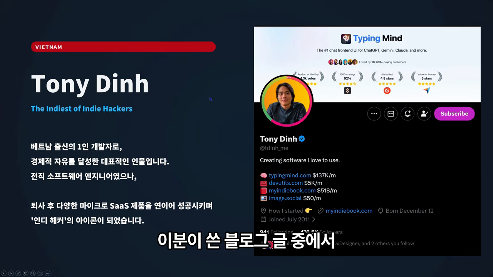
발표자가 Tony를 눈여겨본 이유는 속도예요. OpenAI가 ChatGPT를 API로 열자 그는 곧바로 그 API로 제품을 만들었어요. 빅테크가 내놓는 흐름을 빠르게 제품으로 녹이는 사람이라는 거죠. 발표자는 요즘 LLM(Large Language Model) API로 에이전트를 붙인 앱이나 웹을 만들어야 한다고 늘 말하는데, Tony를 그 본보기로 들어요.
베트남 평균 소득의 340배
다음 슬라이드는 수익 격차를 막대로 보여 줘요. 왼쪽 회색 막대가 2025년 베트남 1인당 GDP(Gross Domestic Product) 5,026달러, 가운데 파란 막대가 한국 36,107달러예요. 오른쪽 초록 막대가 Tony의 연 수익 1,710,000달러로, 월 수익 142,568달러(약 2억 원)에 12를 곱한 값이에요. 왼쪽 큰 글씨 '약 340배'는 이 연 수익을 베트남 1인당 GDP로 나눈 값이에요. 평범한 베트남 직장인이 340년 동안 벌 돈을 1년에 번다는 뜻이에요.
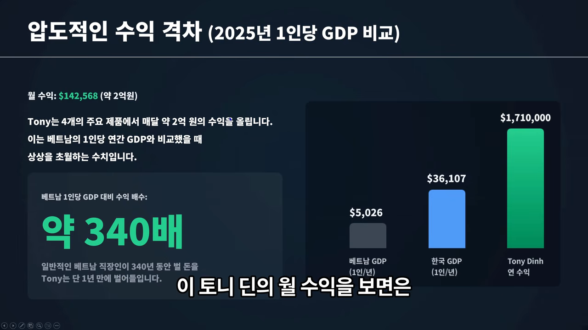
제품 네 개, 수익은 한곳에 몰려요
제품 카드 네 장에는 각 제품의 월 수익과 원화 환산액이 적혀 있어요(1달러 = 1,452.57원). 왼쪽 위 TypingMind는 ChatGPT를 더 편하게 쓰게 해 주는 UI(User Interface) 래퍼예요. 오른쪽 위 DevUtils는 JSON(JavaScript Object Notation) 포매터 같은 개발자용 오프라인 툴 모음이에요. 아래 MyIndieBook은 인디 해커의 여정을 기록하는 플랫폼, Image.Social은 SNS(Social Networking Service) 공유용 이미지를 자동으로 만드는 도구예요.
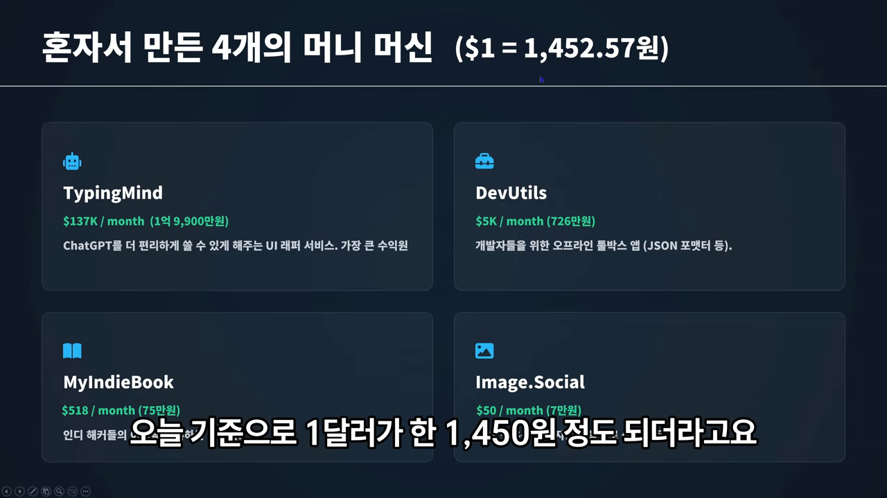
금액을 같은 축에 올리면 차이가 확 드러나요. 월 수익 142,568달러 중 약 96%가 TypingMind 하나에서 나와요. 나머지 세 제품은 합쳐도 6천 달러가 안 돼요.
경제적 자유 이후의 삶
FIRE(Financial Independence, Retire Early) 슬라이드에는 서핑보드를 든 사진과 함께 세 가지가 정리돼 있어요. 첫째, 서핑·키보드 조립·게임·여행처럼 좋아하는 일에 대부분 시간을 써요. 둘째, 마감도 상사의 지시도 없이 원할 때 원하는 만큼만 일해요. 셋째, 무리하게 사업을 키우지 않고 1인 체제를 유지해요. 발표자는 Tony가 고객 불만과 질문까지 모두 혼자 받는다는 점도 특이하다고 짚어요.
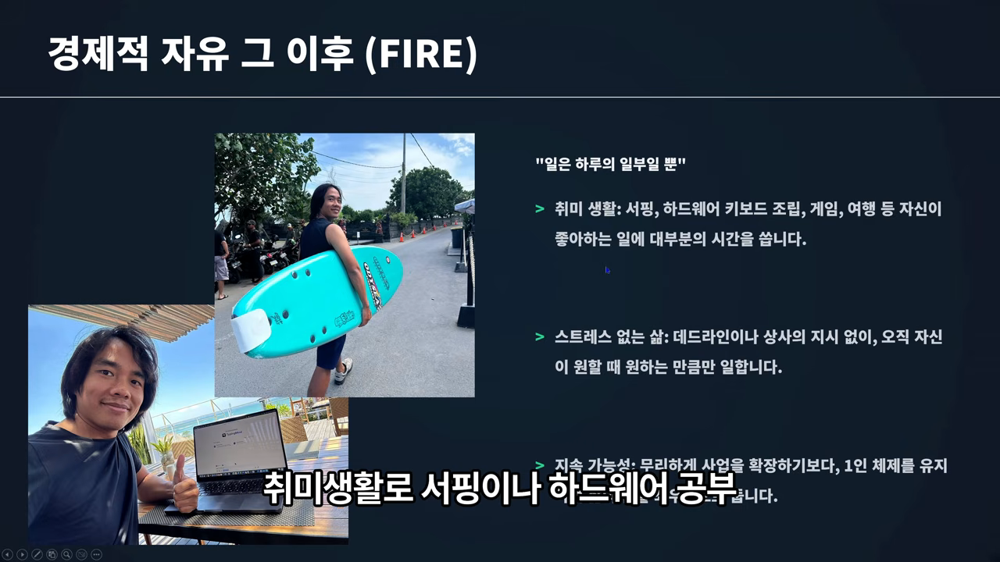
더 자세한 이야기는 Tony의 뉴스레터 블로그에 있어요. 화면에 보이는 첫 글 제목이 'My solopreneur story: zero to $45K/mo in 2 years'예요. 퇴사 후 2년 만에 월 4만 5천 달러에 이른 과정을 직접 정리한 글이에요.
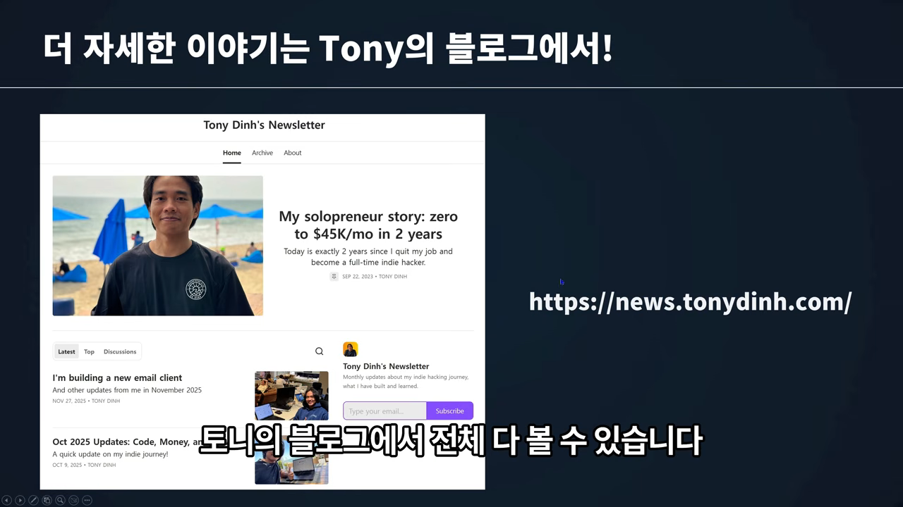
LocalThunk — 이직용 포트폴리오에서 500만 장까지
두 번째 인물은 요즘 가장 화제인 인디 게임 Balatro의 개발자 LocalThunk예요. 실명을 밝히지 않고 이 이름으로만 활동하는 캐나다 개발자예요. Balatro는 포커 족보로 점수를 쌓는 로그라이크 덱 빌딩 카드 게임이고, 혼자 만든 게임으로 유명해요.
게임 화면을 보면 구조가 바로 보여요. 가운데에 낸 카드 다섯 장(Five of a Kind)이 있고, 왼쪽 칸에 칩 440과 배수 19,093이 나란히 떠 있어요. 위쪽 줄에는 모아 둔 조커 카드들이 있어요. 덱을 다듬고 조커를 조합해 점수를 키워 가는 게 이 게임의 재미예요. 발표자는 포커 규칙을 아는 사람에게 권하고, 값도 비싸지 않다고 해요.
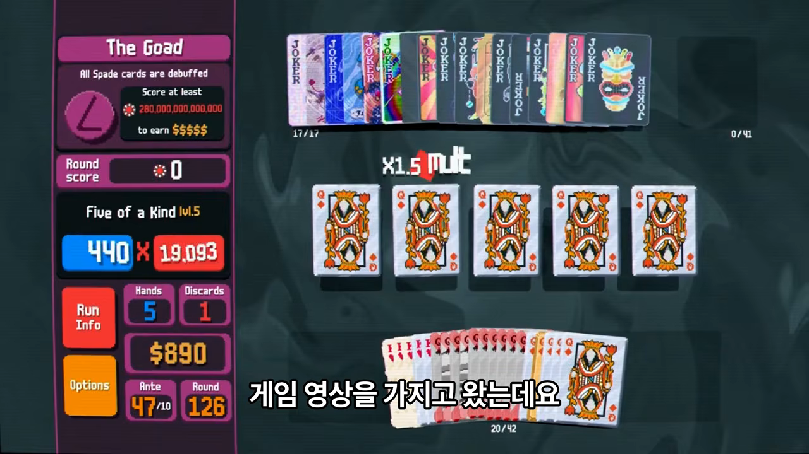
이력서를 채우려던 프로젝트
개발 과정은 LocalThunk의 블로그 글 'The Balatro Timeline'에 처음부터 적혀 있어요. 게임을 어떻게 구성했고 어떤 엔진으로 만들었는지까지 날짜별로 정리돼 있어요.
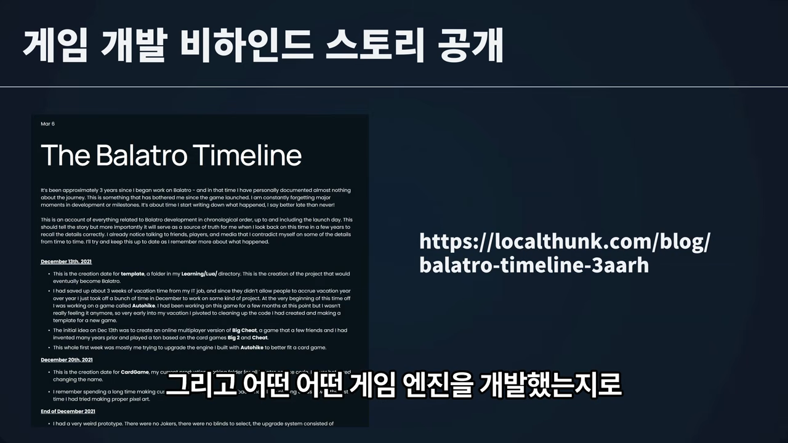
영상이 정리한 출발점은 '취업용 스펙 쌓기'예요. 평범한 소프트웨어 엔지니어였던 그는 게임 업계로 옮기고 싶었지만 경력이 없었어요. 그래서 이력서를 채우려고 프로젝트를 시작했다는 설명이에요. 슬라이드 아래 인용 상자에는 거창한 사업 계획 없이 재미있는 게임 하나를 완성해 보여 주고 싶었다는 말이 적혀 있어요.
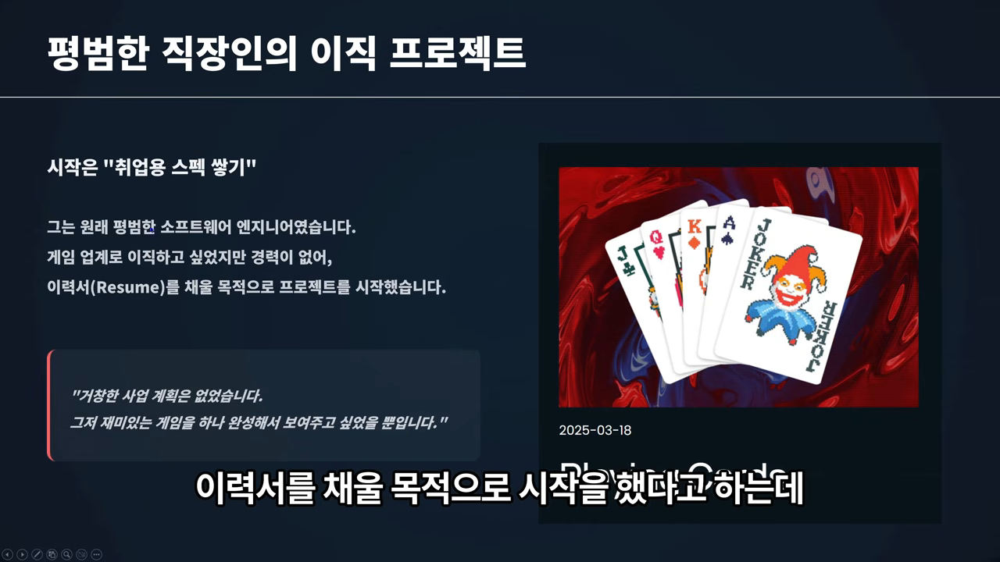
상용 엔진은 필요 없었어요
기술 스택 슬라이드의 카드 세 장이 요점이에요. 언어는 C++나 C# 대신 배우기 쉬운 스크립트 언어 Lua예요. 엔진은 Unity나 Unreal 대신 오픈소스 2D 프레임워크 LÖVE(Love2d)예요. 개발 기간은 2년 6개월이고, 도중에 로그라이크 덱 빌딩으로 방향을 튼 게 신의 한 수였다고 적혀 있어요.
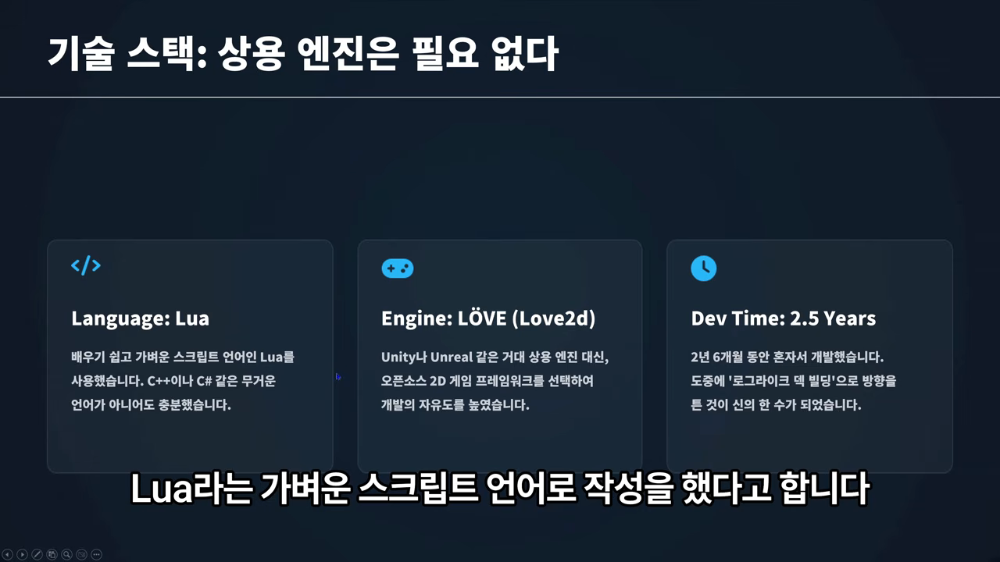
발표자도 처음 듣는 엔진이라 직접 찾아봤어요. LÖVE 공식 사이트에는 love.draw() 같은 짧은 코드 예제가 바로 나와 있고, 사례 목록에 Balatro가 올라 있어요. 발표자는 Vampire Survivors처럼 크게 성공한 게임도 자바스크립트로 만들었다며, 만들고 싶은 게임을 꼭 Unity나 Unreal로 만들 필요는 없다고 말해요.
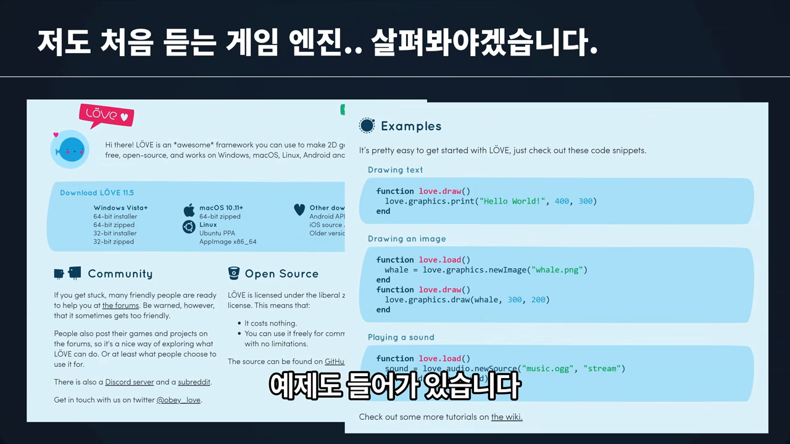
500만 장, 압도적으로 긍정적
결과 슬라이드는 세 줄이에요. 출시 후 짧은 기간에 500만 장 이상 팔렸고, "포커를 이용한 가장 완벽한 로그라이크"라는 평과 함께 메타크리틱 고득점을 받았어요. 왼쪽은 발표자가 캡처한 스팀 상점 화면이에요. 발표자는 매출이 수백억 원대이고, 스팀 수수료로 30~40%가 빠져도 본인 몫이 100억 원은 넘을 거라고 추정해요. 이 금액은 공개된 숫자가 아니라 발표자의 계산이에요.
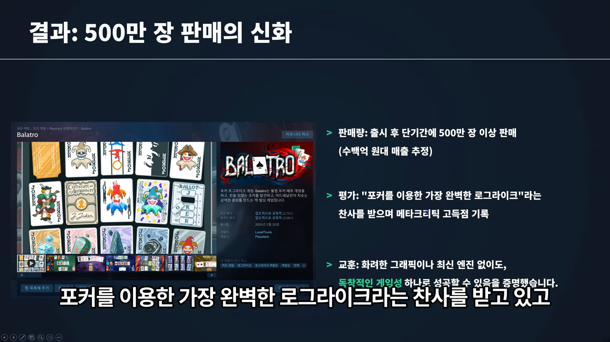
Jen Yip — 내 불편에서 시작한 다중 통화 가계부
세 번째는 가계부 앱 Lunch Money를 만든 Jen Yip이에요. 가계부 시장에서 1인 개발자로 눈에 띄게 성공한 사례예요. 슬라이드 오른쪽은 Lunch Money의 소개 페이지로, 'Hello! My name is Jen.' 아래에 자신을 founder, engineer, designer라고 소개해요. 자기 문제를 풀려고 짠 코드가 그대로 사업이 된 경우예요.
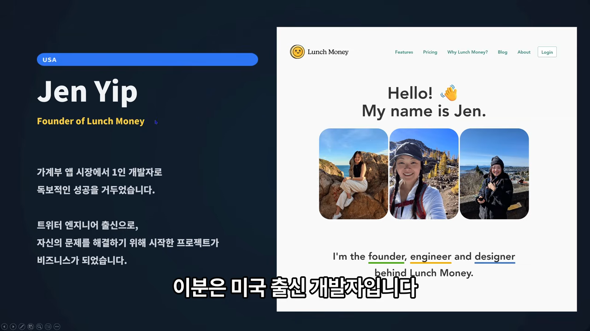
Twitter 엔지니어에서 디지털 노마드로
배경은 실리콘밸리 엔지니어예요. Twitter에서 3년 반 동안 세 팀을 거치며 스택 전반을 두루 경험했어요. 스칼라로 전 세계 트위터 사용자 사이에 오가는 텍스트 메시지를 처리하는 일을 했대요.
이력이 독특해요. 원래 화학 공학 전공이었다가 컴퓨터 공학으로 전과했어요. 디자인에 관심이 많아서 초기 MVP(Minimum Viable Product)는 Sketch로 그려 가며 구상했어요. 회사를 그만둔 뒤에는 일본 후쿠오카에서 디지털 노마드로 지내며 Lunch Money를 만들었어요. 아는 사람이 하나도 없었지만 아주 즐거운 경험이었다고 해요.
여러 통화를 쓰는 사람을 위한 가계부
Lunch Money 슬라이드 왼쪽은 실제 대시보드예요. 계좌 요약(현금, 증권, 신용, 투자)과 이번 달 지출 항목별 막대가 한 화면에 보여요. 오른쪽에는 세 가지가 정리돼 있어요. 출발점은 여행을 좋아하고 여러 나라 통화를 쓰는 자기에게 맞는 가계부가 없었다는 거예요. 기술 스택은 Node.js와 React예요. 광고도 데이터 판매도 없이 매달 구독료만 받아요.
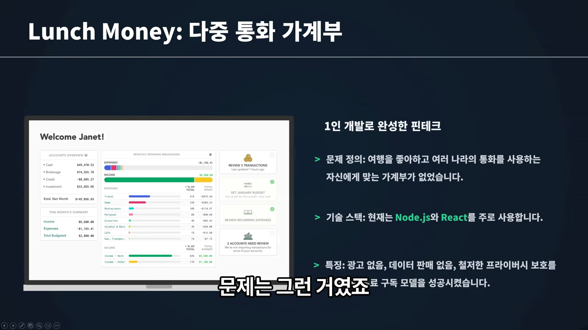
환율 계산처럼 여러 통화를 한 장부에서 다루는 기능이 핵심일 거라고 발표자는 짐작해요. 혼자 시작했지만 지금은 작은 팀으로 운영하는 것 같다고도 말해요.
팟캐스트로 모든 걸 공개하는 사람
마지막 슬라이드의 카드 세 장이 Jen Yip의 방식을 보여 줘요. Podcast Star 카드에는 Indie Hackers 팟캐스트 150회를 비롯해 여러 곳에 나와 혼자 핀테크 앱을 운영하는 노하우를 나눴다고 적혀 있어요. Community Driven 카드는 사용자 피드백을 직접 듣고 빠르게 반영한다는 점이에요. Solopreneur Life 카드는 팀을 크게 꾸리지 않고 자동화와 효율적인 시스템으로 글로벌 서비스를 굴린다는 점이에요.
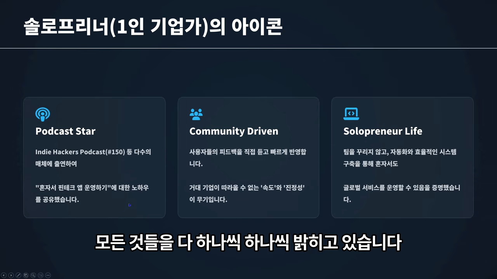
Ivan Kutskir — 서버비 연 50달러로 도는 웹 포토샵
네 번째는 발표자도 자주 쓴다는 Photopea예요. PSD(Photoshop Document) 파일을 열려면 보통 유료 프로그램인 포토샵을 깔아야 해요. Photopea는 브라우저에서 바로 열어요. 만든 사람은 우크라이나 출신 Ivan Kutskir이고, 사무실도 직원도 없이 혼자 연 수십억 원을 벌어요.
슬라이드 왼쪽에 시작 이야기가 있어요. 2012년 대학생이던 그는 "비싼 포토샵 없이 브라우저에서 PSD 파일을 열 수 없을까?"라는 생각으로 개발을 시작했어요. 아래 세 줄이 운영 방식이에요. 여러 VC(Venture Capital) 투자를 거절했고, 마케팅·개발·고객 지원(GitHub 이슈)까지 혼자 하며, 집이나 카페에서 노트북으로 일해요. 오른쪽은 발표자가 직접 접속해 캡처한 Photopea 첫 화면이에요. 포토샵처럼 메뉴가 늘어선 편집기가 브라우저 안에 떠 있어요.
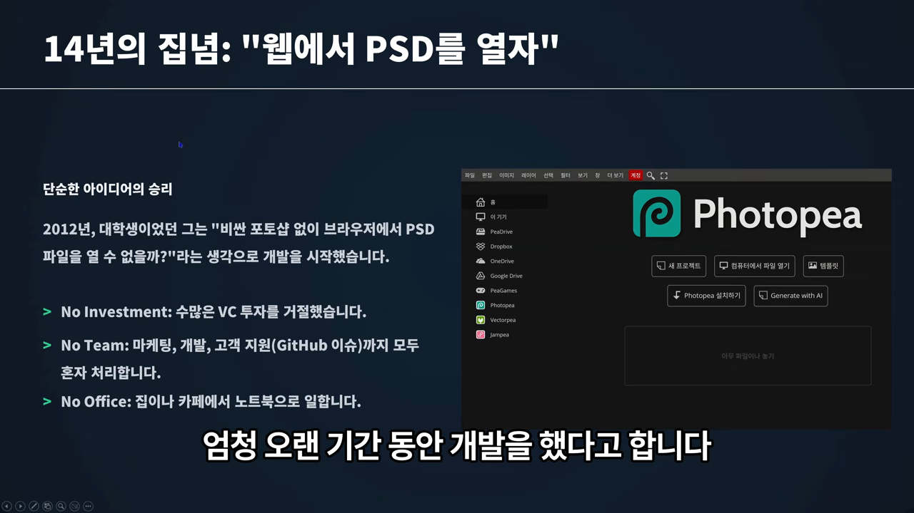
서버비가 연 50달러인 이유
발표자가 가장 놀랍다고 꼽은 건 서버비예요. 1년에 50달러, 약 8만 원이에요. 슬라이드 카드 세 장이 그 이유를 요약해요. Vanilla JS(JavaScript) 카드는 무거운 프레임워크 없이 순수 자바스크립트로 만들어 로딩이 빠르다는 내용이에요. Client-Side 카드는 모든 이미지 연산을 사용자 브라우저에서 처리한다는 내용이에요. 10M+ Users 카드는 월 1,000만 명 넘게 와도 혼자 운영할 수 있다는 내용이에요.
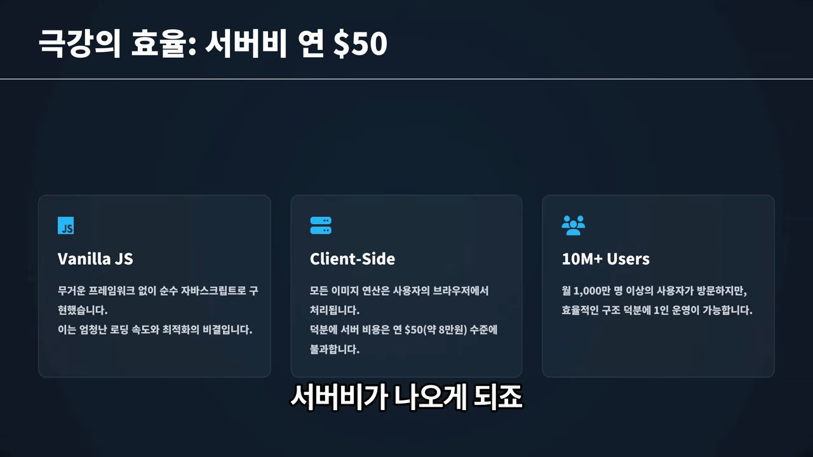
발표자는 보통 웹 서비스와 비교해서 설명해요. 보통은 브라우저가 HTML(HyperText Markup Language)과 자바스크립트를 받은 뒤에도 계속 서버와 통신해요. 서버(WAS(Web Application Server))가 요청마다 돌고 데이터베이스를 오가니, 사용자가 늘면 서버비도 같이 늘어요. Photopea는 Cloudflare Pages 같은 곳에서 정적 파일만 내려 주는 형태예요. 자바스크립트를 받고 나면 이미지 처리는 전부 사용자 브라우저에서 일어나요. WAS가 없으니 서버는 파일을 건네주면 할 일이 끝나요.
그래서 광고 수익이 거의 그대로 남아요. 발표자 계산으로는 월 1,000만 명에게 1원씩만 광고가 찍혀도 한 달 1,000만 원이에요. 실제로는 이보다 훨씬 많이 번다고 해요.
Reddit AMA에서 본인이 밝힌 숫자
근거는 6년 전 Reddit AMA(Ask Me Anything)예요. 화면 가운데 ivanhoe90이 Ivan의 답글이에요. 수익 대부분이 광고에서 나오고, 사용자가 Photopea에서 보내는 1시간마다 평균 5센트를 번다고 했어요. 2019년 사용 시간이 500만 시간이라 약 25만 달러를 벌었대요. 이어서 Photopea는 완전히 사용자 컴퓨터에서 돌고, 파일 호스팅 하나에 1년 50달러 정도만 낸다고 적었어요.
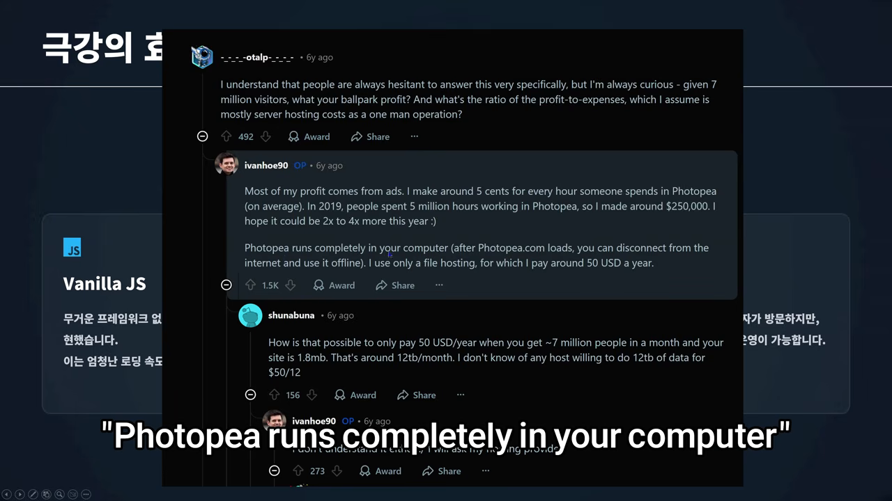
Photopea runs completely in your computer … I use only a file hosting, for which I pay around 50 USD a year.
Photopea는 완전히 사용자 컴퓨터에서 돌아요. 파일 호스팅 하나만 쓰고, 1년에 50달러 정도 내요.
— Ivan Kutskir의 Reddit 답글 (이 영상 11:33 부근)
바로 아래 댓글은 월 700만 명이 1.8MB짜리 사이트를 받으면 한 달 12TB인데 어떻게 50달러냐고 물어요. Ivan은 자기도 잘 모르겠다며 호스팅 업체에 물어보겠다고 답했어요. 발표자는 설정을 그렇게 해 뒀거나 업체가 봐준 것으로 안다고 덧붙이지만, 근거는 밝히지 않았어요.
발표자는 이 사례로 자기 철학을 강조해요. 비용을 줄여야 한다는 거예요. Supabase나 Vercel을 싫어하는 것도 이 생각에서 나왔다고 말해요.
수익 모델: 광고 90%
수익 모델 슬라이드 왼쪽 큰 숫자가 추정 연 매출 300만 달러 이상, 약 40억 원이에요. 발표자가 검색해서 찾은 추정치예요. 오른쪽 세 줄이 구성이에요. 배너 광고가 90%로, 무료 사용자 화면 오른쪽에 광고를 띄워요. 프리미엄 구독이 10%로, 광고를 없애고 히스토리 기능을 늘려 줘요. 마지막은 화이트 라벨로, 기업이 Photopea를 자사 서비스에 넣을 수 있게 API 라이선스를 팔아요.
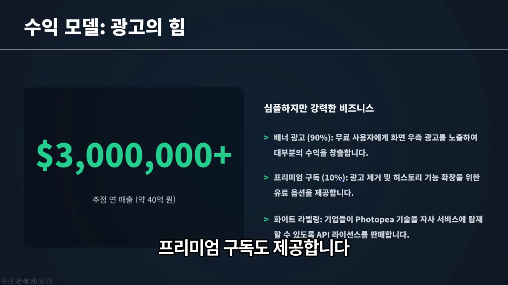
Jon Yongfook — 실패까지 공개하는 빌드 인 퍼블릭
마지막은 Bannerbear를 만든 Jon Yongfook이에요. 그도 Pieter Levels처럼 12개월 동안 스타트업 12개를 만드는 챌린지를 했어요. 그리고 빌드 인 퍼블릭으로 성공한 대표적인 사람이에요.
챌린지 슬라이드 오른쪽에 원칙 세 가지가 있어요. 완벽보다 출시에 집중했고, 반응 없는 프로젝트는 과감히 접었어요(Kill). 반응이 조금이라도 오는 건 더 키웠어요. 그 과정에서 이미지 자동 생성 API 수요를 확인하고 Bannerbear에 집중했어요. 왼쪽은 Bannerbear 홈페이지예요. 'Automate & Scale Your Marketing' 문구 옆에 노란 곰 캐릭터가 있어요.
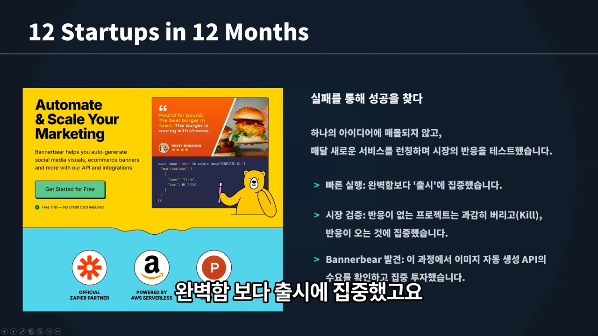
개발자와 기업을 상대하는 API
Bannerbear는 일반 사용자가 아니라 개발자와 기업을 상대하는 B2B(Business to Business) API 서비스예요. 마케팅 이미지나 이커머스 배너를 자동으로 대량 생성해 줘요. 슬라이드 오른쪽 그림의 'How do I create an image via API?'가 이 서비스가 답하는 질문이에요. 발표자는 결제를 API로 파는 Stripe에 빗대요.
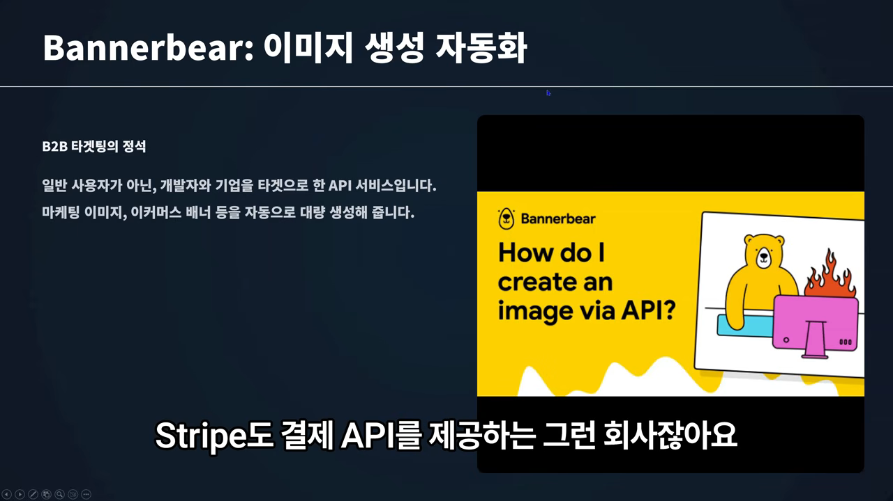
매출도 실패도 공개해요
Jon은 매출(MRR(Monthly Recurring Revenue)), 트래픽, 실패 경험까지 X와 블로그에 공개해요. 슬라이드 오른쪽 초록 숫자가 MRR 79,000달러 이상이에요. 월 매출 약 8,000만 원, 연 약 13억 원이에요. 왼쪽은 그의 고정 트윗이에요. 20년 넘게 20개 프로젝트를 냈고, 그중 돈이 제대로 되는 건 Bannerbear 하나라고 적었어요. 2개는 초기 단계라 아직 벌이가 적고, 1개는 잠깐 벌다 꺾였고, 나머지 16개는 실패했대요. 아래 목록에는 프로젝트 이름과 설명이 하나하나 적혀 있어요.
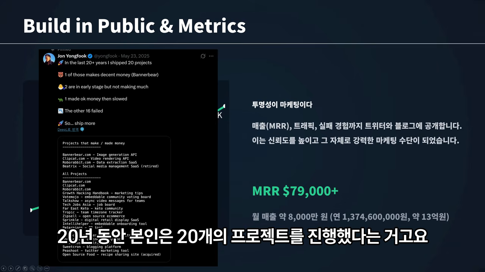
트윗의 숫자를 칸으로 늘어놓으면 비율이 한눈에 보여요. 20칸 중 제대로 돈이 되는 건 한 칸뿐이에요.
발표자는 이렇게 만드는 과정을 투명하게 보여 주는 게 신뢰를 쌓기 좋은 방식이라고 정리해요. 실패를 공개하면 오히려 믿을 만한 사람이 되고, 그 자체가 홍보가 된다는 거예요.
다섯 명의 공통점
마지막 슬라이드의 결론은 '개발자는 혼자서도 강하다'예요. 다섯 명 모두 거창한 투자나 팀 빌딩 없이, 작은 문제를 직접 해결하는 기술 하나로 시작했어요. 자기가 직접 느낀 수요에서 출발해 하나로 시작한 뒤 크게 키웠다는 점도 같아요. 아래 줄의 '당신의 코드도 비즈니스가 될 수 있습니다'가 발표자가 남기고 싶은 말이에요.
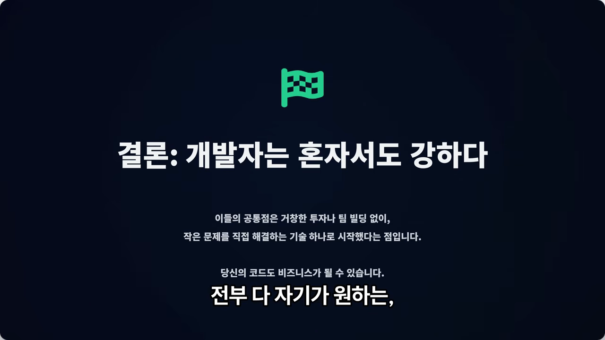
영상에 나온 다섯 사례를 한 표로 모으면 이래요. 숫자는 모두 영상 슬라이드에 나온 값이에요.
| 개발자 | 제품 | 출발점 | 숫자 | 영상이 짚은 점 |
|---|---|---|---|---|
| Tony Dinh | TypingMind 외 3개 | ChatGPT API 공개 | 월 142,568달러 | 새 기술을 빠르게 제품으로 |
| LocalThunk | Balatro | 게임 업계 이직용 포트폴리오 | 500만 장 이상 판매 | 상용 엔진 없이 게임성으로 |
| Jen Yip | Lunch Money | 여러 통화를 쓰는 내 가계부 | 광고 없는 구독 모델 | 피드백을 빠르게 반영 |
| Ivan Kutskir | Photopea | 웹에서 PSD 열기 | 추정 연 매출 300만 달러 이상 | 서버비 연 50달러 |
| Jon Yongfook | Bannerbear | 12개월 12개 스타트업 챌린지 | MRR 79,000달러 이상 | 실패까지 공개 |
발표자는 자료를 준비하며 팟캐스트, 인터뷰, 블로그를 모두 찾아봤다고 해요. 본인들이 직접 한 말을 모은 것이지만 틀린 곳이 있을 수 있으니 댓글로 알려 달라며 영상을 마쳐요.